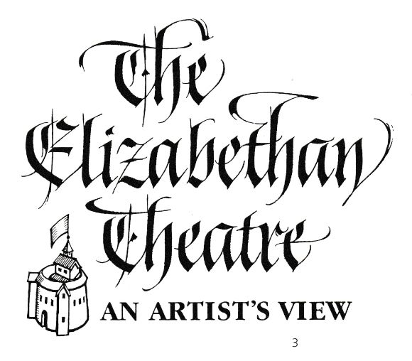
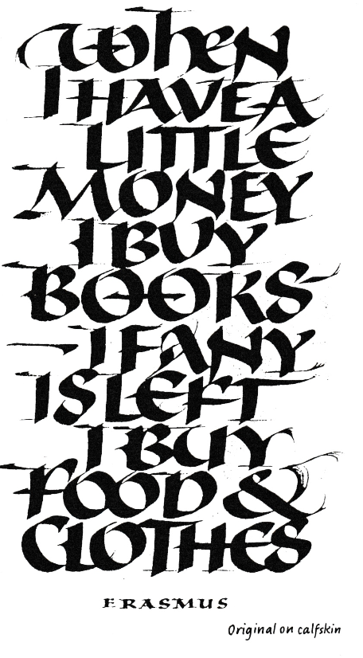
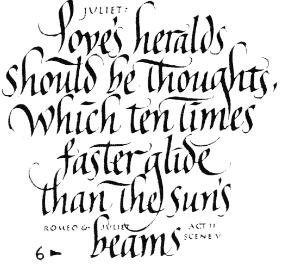
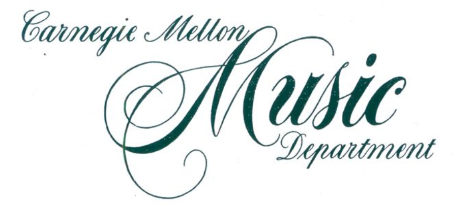

From Beginner to Master Calligrapher
Inky Fingers provides you calligraphy commission services and calligraphy classes, your journey to become a master calligrapher starts today!
Various styles to suit your interest

Gothic

Uncial

Italic

Copperplate
Calligraphy is the most intimate, private, and spontaneous expressive means. Like a fingerprint or voice it is unique with every person.Typography is two-dimensional architecture, based on experience and imagination, and guided by rules and readability.
- Hermann Zapf
Call to action! It's the time!
Sign up for our product by clicking that button right over there!